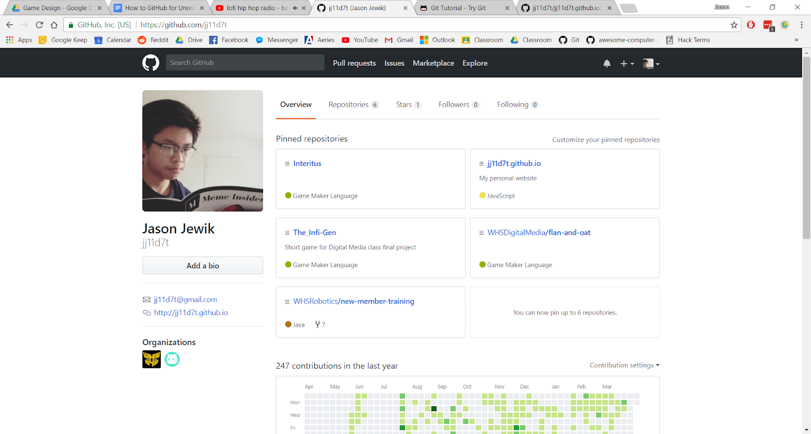
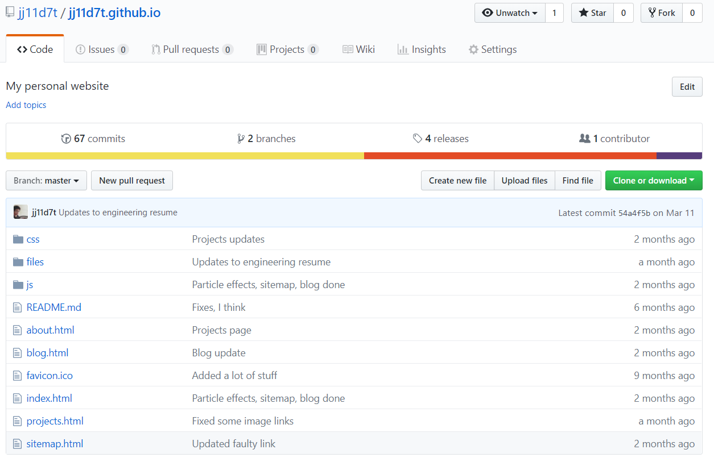
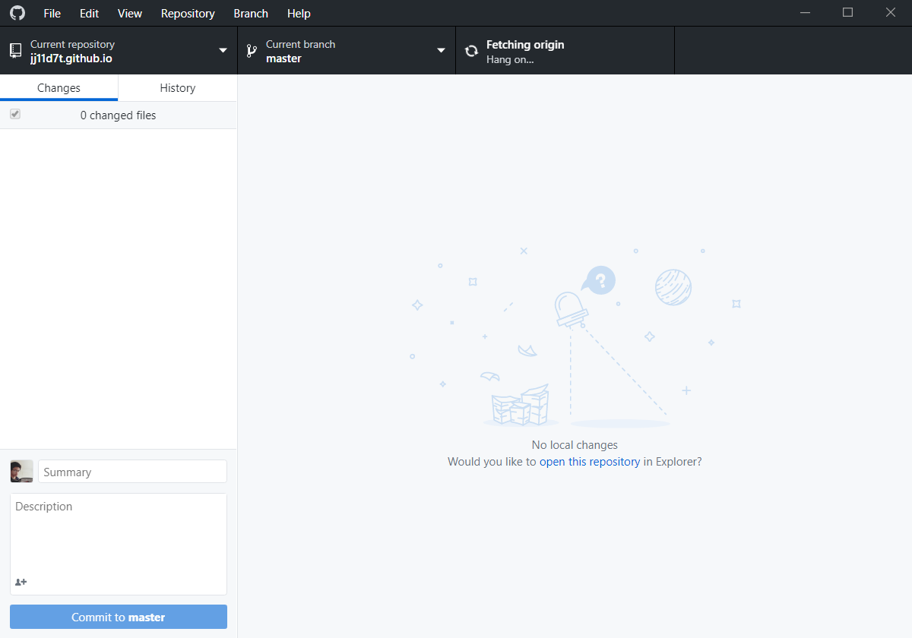
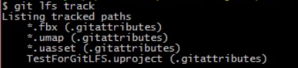

How to Github for Unreal Projects
11 April 2018
Originally for Intermediate Game Design class
-----
What is GitHub?
According to their website’s About Page… “GitHub is how people build software”. Okay, but what exactly does that mean? To use an analogy, GitHub is basically Google Drive for programmers. For those of you who know what GitHub is actually capable (and not capable of), the analogy falls a bit short, but it gets a general idea across: GitHub can be used to synchronize project files across different computers.
As game developers, this is something that we need to do if we want to effectively work on games that involve more than one person. Without GitHub (like when we worked on our first semester Stencyl projects), there’s a lot of either going back-and-forth where one person puts something in, then uploads it, then someone else downloads it, makes changes, then uploads it, then the next person… and so on. And while all that’s happening, only one person can (or should be) making changes at a time. Otherwise, oops, now we have different changes that we have to copy over n amount of times for the n number of people on the team.
With GitHub, we don’t need to do that anymore. Everyone can work on the project simultaneously and GitHub does this magical thing of putting all together for us. However, GitHub fails if different people are all trying to edit the same thing. Going back to the Google Drive analogy, it’s nice and all that it lets us collaborate with people on the same doc at the same time, but if one person’s trying to type something up while someone else was already typing on the same line, you get this garbled mess where words clash and sentences get cut. Same thing with GitHub. Specifically, it’s referred to as a ‘merge-conflict’, but we’ll talk about that when we need to. Hopefully that time will never come.
Setting up a GitHub Account
To set up an account on GitHub, go to https://github.com/. You should be greeted with the sign-up screen. Go ahead and create an account. Once you have your account set up, you can quickly access it by going to https://github.com/your-username. Assuming you’re signed in, you can also access it just by going to https://github.com as well.
Additional Readings Pt. 1
https://www.atlassian.com/git/tutorials/what-is-version-control
https://www.atlassian.com/git/tutorials/what-is-git
https://readwrite.com/2013/09/30/understanding-github-a-journey-for-beginners-part-1/
Creating the Repository
Repositories (aka Repos) are the spaces where your GitHub projects will be stored. A local repo refers to one on a computer like a laptop or desktop. The remote repo refers to the one hosted on GitHub.
So this is what my profile page looks like. Note that to the right of my profile pic, there’s a row of text: ‘Overview, Repositories, Stars, Followers, Following’. Right now, we’re going to head over to the ‘Repositories’ tab, where you should see a list of well, nothing. So let’s get started on adding a repository!

Alright, so once you’re on the repositories page, you should see a screen that looks like the following. We’re going to click on the green button in the upper-righthand corner that says ‘New’. That’ll open up a new repository for us to use.

You can name your repo whatever you want, just note that whenever you want to access it, you can find it at https://github.com/your-username/your-repo-name. Your repo visibility has to be toggled to ‘Public’ (‘Private’ is exclusively for GitHub Pro) and we are going to initialize it with a README.md file. Don’t worry too much about this now — in fact, using a README.md file is a topic for another day since we’d have to learn Markdown to use it effectively. Then select ‘Add .gitignore’ and select ‘UnrealEngine’.
TL;DR, a .gitignore file does exactly what it sounds like it would do: it tells Git to ignore files with the user-specified endings. But, we don’t actually need to know what these files are since we can just use the ‘UnrealEngine’ preset, which tells Git to ignore a lot of unnecessary files that don’t need to be uploaded to the remote repo every time you update your project. If you want to read more into it, please do, I actually have no idea what these files are or why we want to ignore them, but that explanation sounded reasonable enough to me, so I just rolled with it.
Now that we all of that set up, we can finally create our repository which should take you to a screen that looks something like this:

Once again, yours will be empty, but just to get you familiar with what a repo that has stuff in it would look like, here’s my website’s repo. You can see folders and files marked along with tags that indicate the message of their most recent commit (update) and when that commit happened. What we want to do right now though, is share the repo with our teammates. So click the ‘Settings’ tab along the bar right below your repo name then click the ‘Collaborators’ tab on the left panel. From there, you can add your teammates much like you would via Google Drive.
Now, if we head back to the ‘Code’ panel, we can press the green ‘Clone or download’ button to clone our repo. We don’t want to just download it, since that would just give us a zipped file. We want to clone it so that we have a synchronized version. But wait! We don’t have Git or a Git GUI client installed on our computer yet. Time to install one…
Installing Git or a Git GUI Client
First you’ll need to go here: https://desktop.github.com/ to install GitHub Desktop. Normally that’d be it, but because Unreal Projects are so massive (and have a lot of binary files), GitHub can’t actually handle them raw. We’ll need to install https://git-lfs.github.com/ too. Git LFS (Git Large-File-Storage) was created specifically for projects with a ton of files like Unreal games. Lastly, we’ll need to install Git Bash from here: https://git-scm.com/download/win.
Cloning the Repository
Now that we have Git and a GitHub Desktop installed, we can finally clone our repo. When prompted to clone the repo, select ‘Open in Desktop’, which should open up GitHub Desktop. Choose a directory and then clone the repo into it. Once it’s done, you should get something that looks like this (once again, this is my personal website’s repo):

If you check out the ‘History’ tab, you’ll be able to see a changelog of all the modifications you and your teammates have made to this repo’s current branch: the master branch.
Branches
If we think of a GitHub repo like a tree, then branches make a lot more sense. Imagine that the root of our GitHub tree is our first commit - just planting the seed for an awesome project to bloom later on. Imagine that the end goal is the very top of the tree. Now, what would branches on that tree be?
Branches are a way for us to try things out before committing them to the ‘master’ branch. So let’s say you want to try out a new menu system, but you’re not really sure if it’ll look good or if it’ll play nicely with everything else you’ve already made. We can just make a branch off of the ‘master’ branch and test it there. Note that the two branches are now separate and that they will not sync with each other. This means that once we’re done testing the new menu system, we’ll have to pull the branches into each other and re-merge everything. On the other hand, if we don’t like what we made, then we can just ‘cut’ the branch by deleting it… and no harm done! The ‘master’ branch (and your main project files) are still there, so everything’s oki-doki.
Here’s a diagram that may help you visualize how branches work:

Of course, it is entirely possible for you to finish your project without creating any additional branches — in fact, this may be easier since misuse of branches can lead to some headaches like those awful merge-conflicts I talked about at the very beginning. However, I just wanted to let you know that the feature exists, so if you choose to use it and look all professional, you can.
Setting up Git LFS
To do this, go to the ‘File’ tab in GitHub Desktop and select ‘Options’ then ‘Advanced’. In the ‘Advanced’ tab, where it says ‘Shell’, select ‘Git Bash’ from the dropdown menu then save. Now when you click on the ‘Repository’ tab at the top, you should see in the dropdown menu, an option that says ‘Open in Git Bash’. Select that. It should open up a window that looks like something out of the Matrix. Now you’re a hackerman!
{kind=link}
Anyway, the reason why we’re here is because we have to initialize Git LFS. Type ‘git lfs install’ then hit enter (whenever I say to type a command in from now on, I mean to hit enter after). Then we’re going to type in ‘git lfs track “*.fbx”’, ‘git lfs track “*.umap”’, ‘git lfs track “*.uasset”’, ‘git lfs track “*.uproject”’. Make sure these are all spelled correctly! These are the Unreal assets that we want Git LFS to take care of rather than our regular repo. To double-check that you got all of them, you can type in ‘git lfs track’ and that should list every file type that Git LFS is tracking. It should look something like this:

You will need to do this every time you open a new local repo. You have to explicitly tell it to use Git LFS and to track the files that we want tracked.
Once those changes have been made, go back to GitHub Desktop. You should see some new changes showing up in the ‘Changes’ tab of your repo. Write the commit message to whatever you want, I would recommend saying ‘Modified .gitattributes’ (and if you want, you can write a description too, though that’s not necessary). Then, press ‘Commit to master’ then ‘Push to Origin’.
Additional Readings Pt. 2
So you may have noted that throughout this, I interchangeably used ‘Git’, ‘GitHub’, ‘Git GUI Client’, and other words prefixed with ‘Git’. That’s because GitHub is actually just one way of doing version control using Git. You could also use GitLab or BitBucket. GitHub Desktop can also be switched out too! There are alternative Git GUI Clients such as GitKraken or SourceTree, which mostly change how the application looks, but also provide different functionality. Alternatively, if you want to be super old-school-cool, you could use Git straight from Powershell or Bash. Of course, it’s a bit harder since you’d need to learn all the commands and stuff (and trust me, this tutorial is barely scratching the surface of what Git can do, but don’t worry, it’ll be enough for you to get started and get your project going).
https://try.github.io
https://www.gitkraken.com/
https://git-scm.com/book/en/v2/Git-Branching-Basic-Branching-and-Merging
https://www.atlassian.com/git/tutorials/git-lfs
Create your Unreal Engine Project
Create your Unreal Engine project within your local repo. [Note: if you have your local repo on the Q drive (the server), you need to move it onto the E drive before going any further. You can just move the folder from File Explorer, then you'll need to tell GitHub Desktop where you moved it to.] So for instance, my local repos are saved to C:\Users\Jason Jewik\Documents\GitHub\repo-name. Once your project has been made, open the ‘Source Control’ tab on the top panel next to ‘Save’. From the dropdown menu for ‘Provider’, choose ‘Git’. Unreal Engine should automatically populate the path to your git.exe file. If it doesn’t… your git path should be somewhere like C:\Program Files\Git\bin\git.exe (unless you installed Git to the E drive, in which case, it'll be somewhere else). Accept settings, and now we’re hooked up to version control!
Now go back to GitHub desktop, and you should note that there are changes! We want to add the .uproject file, so just the same as before with setting up Git LFS, we’ll want to write a commit message, commit the change, then push to origin. Note that the changes committed are only the ones with a checkbox beside them.
If you’d like, check your GitHub repo to ensure that the file was uploaded. We should now have a .gitignore in there, a README.md, and a .uproject file. If you check the .uproject file, it should actually be less than a kilobyte in size because of Git LFS. Magic! (Unless you read the additional readings and know better. Pointers!)
If you want to get rid of a change, you can right-click on the changed file and select ‘Discard changes’. If you want to get rid of all changes since your local repo last synchronized with the remote repo, you can select ‘Discard all changes’.
Getting GitHub to Track Files
When you create files in your project (let’s say a level), their icons in the Content Browser will have a little question mark in the upper-righthand corner. This means that Git isn’t tracking that level’s changes. This is great if you just want to test something locally on your computer that you aren’t sure if you want to add to the remote repo. Now, let’s create a new level. Let’s say that this level is the final version and you want GitHub to track it. Right-click on it and you should see ‘Source Control’ at the bottom. Click it then click ‘Mark for add’. The question mark should turn into a plus sign to denote that Git has noticed there are some differences between the remote repo’s version of that final (or lack thereof) and your local repo’s version. If files had things removed, then it would be a minus sign.
Now that Git is tracking our level, go back to the ‘Source Control’ tab. Then select ‘Submit to Source Control’. You should see a changelist with the one level we added. Give it a description then press ‘Ok’.
Go back to GitHub and check ‘History’. You should see that your commit is there, but it’s only on the local repo. Now, push it up to the origin and ta-da! Now our level is on the remote repo too! Check your repo on the GitHub website and it should be in there.
Using your GitHub Repo
Try to upload your changes frequently. You could do them in larger segments, but short bursts are better just because larger segments take forever to upload. Plus, if the Internet flickers for even a bit… there is a possibility for file corruption. Usually Git will try to avoid this by aborting the upload, and you can just restart the sync, but my advice would be to play it safe and just make commits frequently.
The other upside to making commits often is that it makes it easier to undo changes. Let’s say that you make a commit with ten new textures, but you only want to get rid of one. Well, you’re going to have to either undo that commit and add back the nine other textures or you’re going to have to delete that one texture and then make a new commit. We don’t want either because the former is tedious and the latter makes clutter in our repo if we do it too often.
Conclusion
And that’s it! If you want some takeaway points, they would be: 1) NEVER edit the same file that someone else is editing, or you will get a merge-conflict and that’s never fun, especially for Unreal Engine projects, 2) Make sure that everyone has Git LFS installed BEFORE they even clone the repo, otherwise, files won’t be synchronized properly, 3) Commit often, and 4) While not 100% necessary, branches are an excellent way to organize your project repo. Good luck!